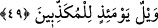
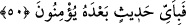

bedenini öne doğru eğmesi anlamında mecâzî değil hakîkî anlamdadır. Namazın rukûu
da bu anlamda bel bükme gerçekleştiği için hakîkî anlamdadır. Ancak rükû kelimesinin
Allah’a itâat ve boyun eğme şeklinde tefsiri mecâz-i luğavî’dir. Böylece itâat ve boyun
eğme insanın maddeten bedenini bükmesine ve eğmesine benzetilmiş oluyor.
Âyetin sonunda “rükû etmezler” ifâdesi kullanılıyor. Bunun anlamı gene mecâz-i
luğavî olarak Allah’tan huşu duymazlar ve bunu kabul etmezler. Böbürlenme huylarına
ısrarla devam ederler, demektir.
Bâzı âlimler şöyle derler: Âyet-i kerîmede onlara namaz kılmaları veya rükû etmeleri
emrolunuyor, onlar ise bunu yapmıyorlar. Çünkü rivâyete göre bu âyet-i kerîme
Peygamber (s.a.) Efendimiz Sakif’lilere namaz kılmalarını emrettiği zaman inmiştir.[225]
Sakif kabilesine mensup olan bu kişiler; “Biz yere kapanmayız ve rükû’da durmayız.
Çünkü o bize ağırdır.” demişlerdir. Peygamber (s.a.) Efendimiz de “rükû ve secdesi
olmayan dinde hayır yoktur” buyurmuştur.[226]
Bâzı tefsirlerde ifâde edildiğine göre araplar câhiliyet döneminde putlara secde
ediyorlar ama rükû etmiyorlardı. Böylece rükû Allah için namaz kılan müslümanların
namazlarının bir nişanesi ve sembolü hâline gelmiştir.
Bu âyet-i kerîme kâfirlerin âhirette hesâba çekilme açısından -daha önce defalarca
geçtiği üzere- dinin füruu (detay hükümleri) açısından mükellef olduklarına işâret
etmektedir.
Bu âyet-i kerîme öte yandan namaz kılmayanlara büyük bir kınama ifâde etmektedir.
Çünkü namaz kılmayan kimse Allah’a çağırana uymamaktadır. Allah’a çağırandan
maksad müezzinlerdir. Çünkü onlar günde beş vakit müminleri Allah’ın evine ve namaz
kılmaya çağırmaktadırlar. Diğer dâvetçileri de bu müezzinlere benzetebiliriz.
Kâşifî demiştir ki, maksad şudur ki Müslüman olmazlar, zira iki şehâdetten sonra
İslam’ın en büyük rüknü namazdır.
et-Te’vilâtü’n-Necmiyye’de şöyle deniyor: Onlara rükû ediniz, denildiği zaman yâni;
onlara hayvânî lezzetlerden vazgeçiniz, rûhânî lezzet içerisinde baki kalınız. Çünkü
rûhânî lezzet ruhun münacatı Allah Teâlâ ile sır mâhiyetindedir ve rûhânî lezzetten daha
lezzetlisi de yoktur, denildiği zaman bunu kabul etmezler.
49. O gün, (hakîkatleri) yalan sayanların vay hâline!
Lânet o gün yalan söyleyenlerin üzerinedir. Rükû ve secdeyi yalan sayarlar, İslam
şerefine erişemezler.